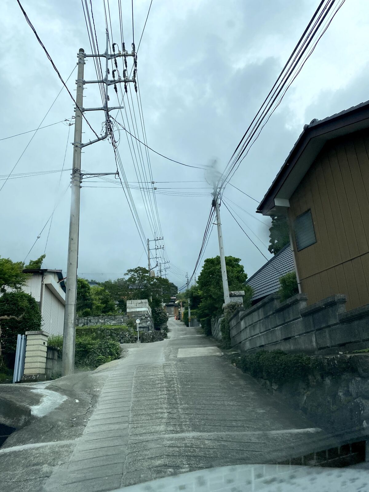
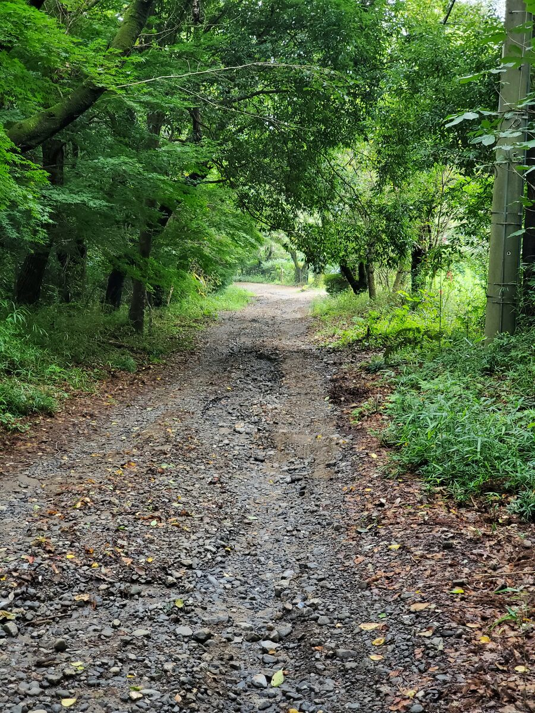

（※険道を走る際は自己責任でお願いします 無理だと思ったら素直に引き返しましょう）
道路走破班は地理愛の道路趣味者の集まりです。険道を走ったり長距離ドライブしたりしてます。一人だとちょっとしんどい長距離ドライブでも、道路走破班ならそれなりに人数集まります！
ということで、険道走りたいけど一人じゃ心配…という人や、東名阪を一般道だけで走りたいけど一人じゃしんどい…という人を募集しております！！
ぜひ筑波大学地理愛好会の道路走破班へ！！
道路走破班は7月13日に筑波山険道チャレンジを行いました！🏞
— 筑波大学地理愛好会 (@tsuku_chiri) July 25, 2021
もはや渓流と化している「県道218号大塚真壁線」や激坂の続く「県道139号筑波山公園線」、一部に未舗装路の残る「県道236号筑波公園永井線」、筑波山地の稜線を走り抜ける「北筑波稜線林道」など、筑波山周辺の険道を楽しみました！🏔 pic.twitter.com/mF7eSmWuIj
ということで、今回は道路走破班が7/13にやった筑波山険道チャレンジの実走データを元に、筑波山周辺の険道・林道の情報をまとめました。このへん走りたい人の参考になれば幸いです。
こちらのサイトも参考になります。合わせてご覧下さい。
今回紹介する道
(地理院地図を改変)
①茨城県道139号筑波山公園線
(中腹 写真では分かりづらいがかなりの急坂 楽しいけど対向車が来ると詰む)
道路状況: 良好
路面状態: 舗装(一部、コンクリート舗装)
景観: 良好
交通量: そこそこ
概要:
県道139号筑波山公園線は、つくば市北条から筑波山中腹の筑波山神社までを南北に結ぶ一般県道である。霊峰・筑波山中腹にある筑波山神社への参道であった「つくば道」をほぼそのまま踏襲した道路であり、元々徒歩を想定した道であるために筑波山へ向かってまっすぐ一直線に登っていくルートをとるのが特徴である。
道路状況:
古くからの筑波山神社への参詣道であるがゆえ、元々は徒歩を前提とした道である。そのため、麓の臼井地区から筑波山神社までの区間は一般的な山道のようなつづら折りの道路(例: いろは坂)にはなっておらず、斜面をまっすぐに登る道となっている。最小幅員2.4mと車のすれ違いも困難な区間も多く、同時に斜度25％以上の急坂が続く。スリップを防ぐために舗装は段差付きのコンクリート舗装がなされており、また民家の入口前は平坦になるようにされているために踊り場のようになり、道路が踊り場と坂を繰り返し、大きく波打つ状態となっている。特に六丁目の鳥居を超えた先は民家の敷地に入らなければすれ違いが困難。
筑波山に車で行くとき、いつもの道ではなくこちらを走ってみるのはいかがでしょうか。
②茨城県道42号笠間つくば線
(風返し峠に設置されている標識 このおどろおどろしさがむしろ興味をそそる)
道路状況: 良好
路面状態: 舗装(一部コンクリート舗装)
景観: 期待薄
交通量: そこそこ
概要:
茨城県道42号は笠間市から道祖神峠を越え石岡市柿岡を通り、筑波山の風返峠を越え筑波山神社付近を経由しつくば市に至る約40kmの路線である。今回紹介するのは、風返し峠から石岡市八郷に至る区間である。
この区間のうち、つくば市国松から筑波山神社までの区間は筑波山を登るときにはほぼ必ず通る道である。また、筑波山神社から風返し峠までの区間もつつじヶ丘駐車場に向かうには必ず通る道であろう。
しかし、今回紹介する風返し峠から東、石岡市八郷に至る区間を走ったことのある人は多くはなかろう。風返し峠にはわざわざ「小型車以外通行不能」と大書した標識が設置されているのである。この標識を見てこの道に入ろうと思う人はそうそういないだろう。
道路状況:
傾斜は急であるものの道路幅は対向車とすれ違うのに十分な広さがある。険道に興味を持ったときに最初に走る道としてオススメ。
③茨城県道236号筑波公園永井線
(いわゆるダート 飛び石には注意)
道路状況: 良好
路面状態: 一部未舗装
景観: 微妙
交通量: 少ない
概要:
表筑波スカイラインから途中で曲がった先の道。茨城中央青年の家方向。
道路状況:
表筑波スカイラインから分岐して茨城中央青年の家までの数百メートルが未舗装となっている。筑波山周辺で険道巡りをするついでに簡単に寄れる未舗装険道である。ガッタガタ楽しいのでオススメです。
(道路走破班 班長)